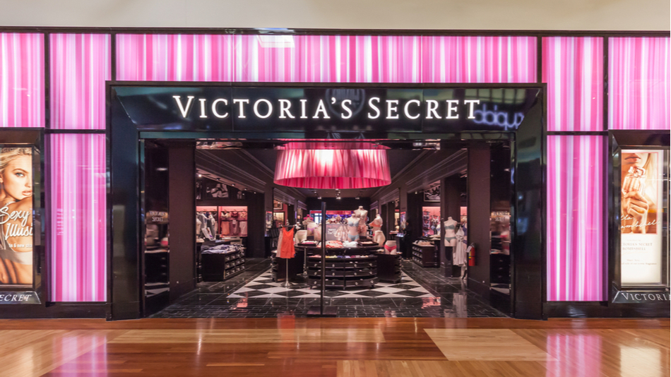
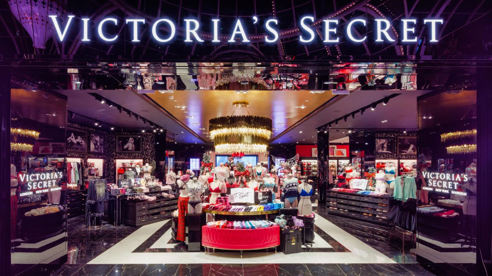
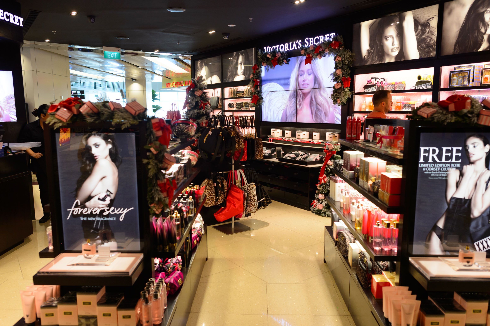

Victoria's Secret
  
Victoria's Secret was founded by Roy Raymond, and his wife, Gaye Raymond, on June 12, 1977. The first store was opened in the Stanford Shopping Center in Palo Alto, California. Years earlier, Raymond was embarrassed when purchasing lingerie for his wife at a department store.
Subsidiary: Victoria's Secret Beauty, Victorias ...
Founders: Roy Raymond, Raymonds
Person: Les Wexner, Sharen Jester Turney